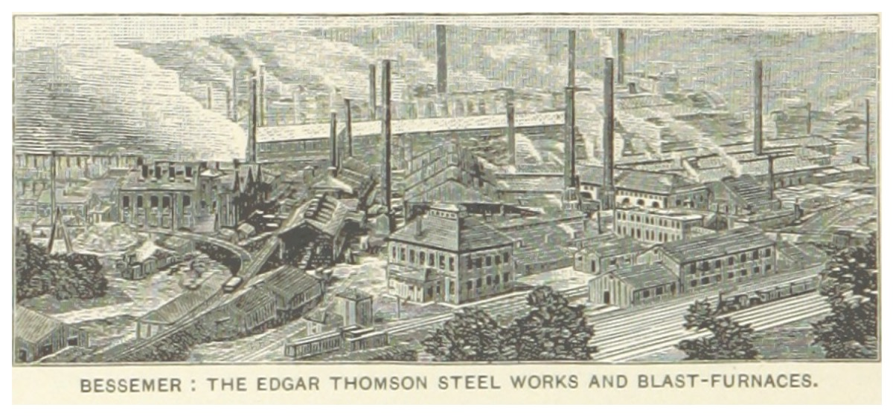
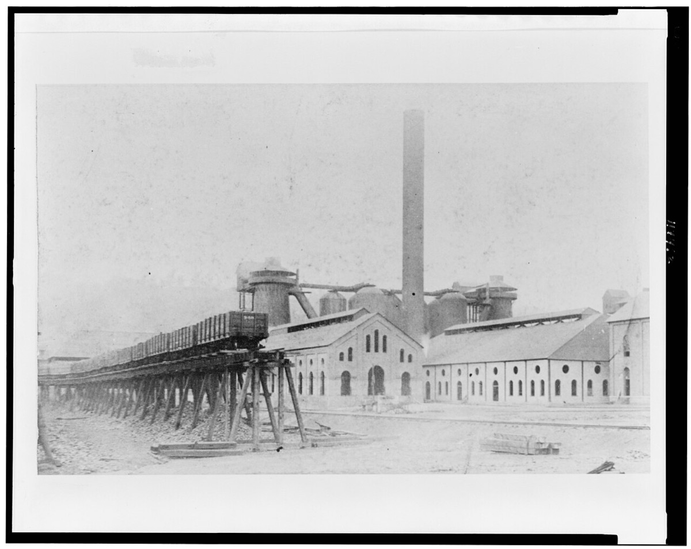
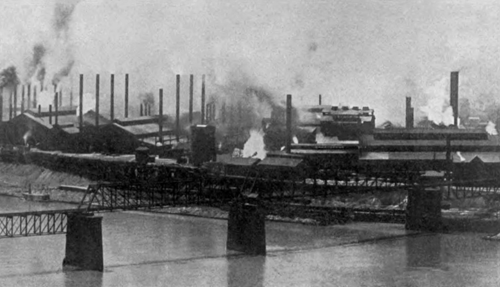
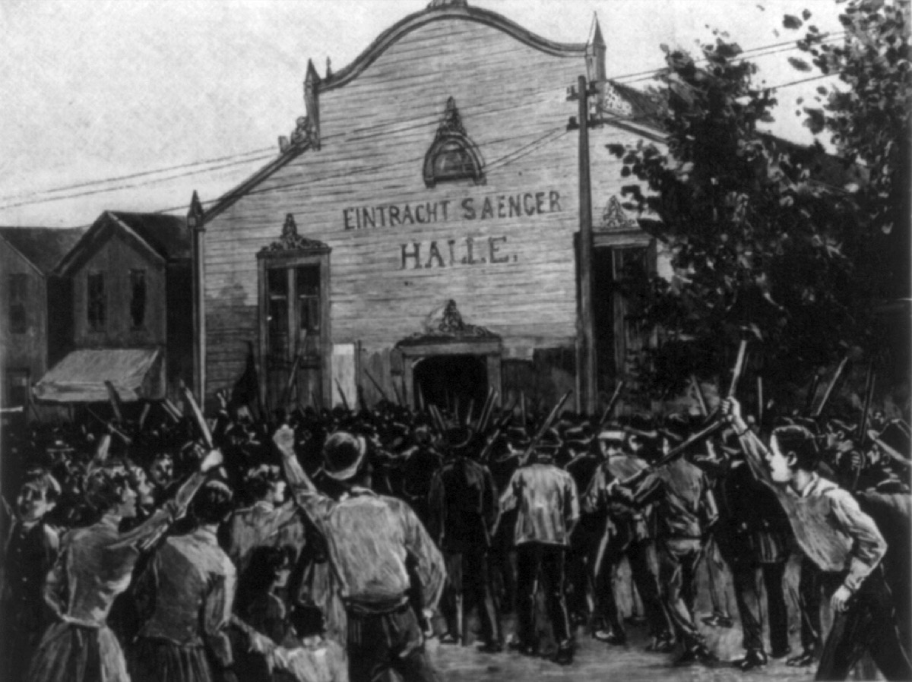
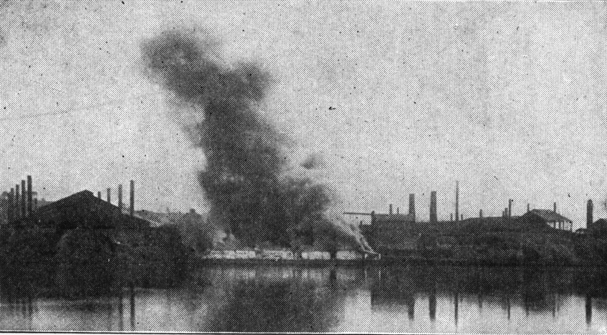
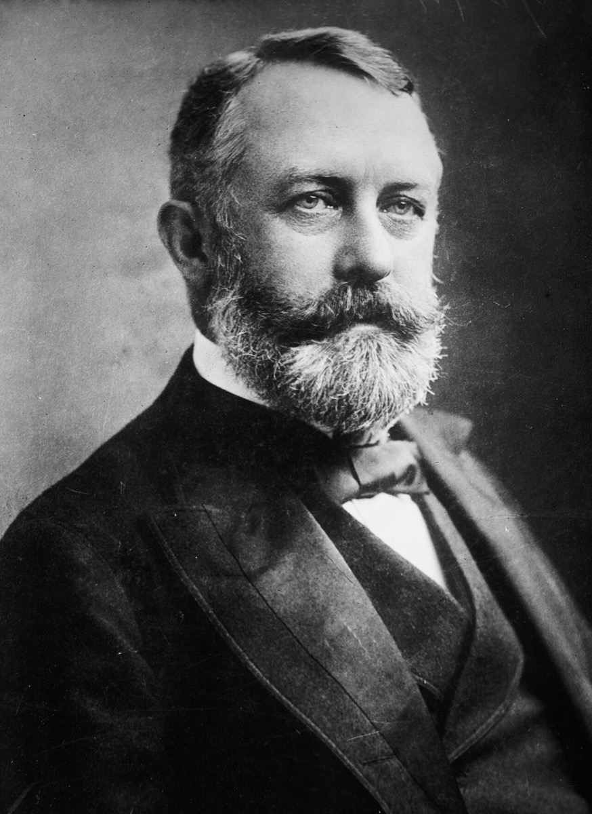
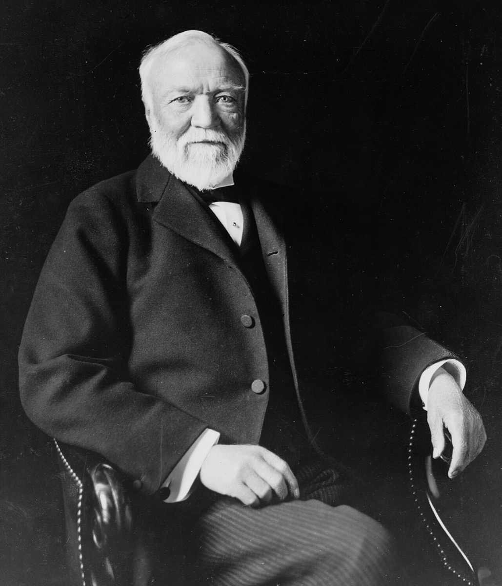

鋼レール市況の通説1875年 $160／トン（当時のレートで約160円、今の物価で約120万円）は、工場側と NBER の contemporaneous 系列（約 $69–70。当時のレートで約70円、今の物価で約50万円）と一致せず棄却する。観測できる時点では同社原価は市況を下回る。原価記帳と操業改善は工場史が幹部の行動として書き、本人の直接執行かは判定不能である。価格下落の主因帰属も未検証である。1901年の出口では本人取り分は約 $225.64M（当時のレートで約4.6億円、今の物価で約2兆円）の5%金債である。U.S. Steel の公称資本は約 $1.4B（当時のレートで約28億円、今の物価で約12兆円）である。
再作成日 2026年11月11日（初稿 2026年9月26日）。金額は当時の米ドルであり、括弧内に日本円の換算を添えた（方法は⑧）。年表の満年齢は生年月日1835年11月25日からの年差。没後項目は年差で「没後N年」。市況は NBER 系列04181（Iron Age 週次平均）と Edgar Thomson 工場側年次表を優先し、通説 $160 は誤りとして棄却する。
先に結論を3つ書く。
1つ目。恐慌下でも Edgar Thomson 建設を続け、観測点では同社原価が売価・市況を下回った。カーネギー本人の確認できる意思決定は建設継続である。1875年9月の初月製造原価は $57／トン（当時のレートで約58円、今の物価で約41万円）である。平均売価は $66.50／トン（当時のレートで約67円、今の物価で約48万円）である（会社の結果）。工場史は原価記帳の導入を Wm. P. Shinn（H. Phipps が整備）、操業改善を Capt. W. R. Jones の行動として書く。原価管理を本人の直接執行とみなす命題は判定不能である。通説の1875年 $160／トン（当時のレートで約160円、今の物価で約120万円）は時点誤りとして棄却する。「価格支配ではなく原価管理の結果だった」という因果・比較、および同社コスト会計が産業価格下落の主因か否かも判定不能である123。
2つ目。Homestead（1892）で地理的不在と文書上の関与は分けて読む。本人はスコットランドにいた。7月4日の Frick 書簡は Pinkerton 上陸計画を伝え、本人側電文は組合員再雇用拒否を示す。Pinkerton投入またはロックアウトを本人が事前承認した直接証拠かは判定不能である。検屍で死者は労働者側7・Pinkerton側3（計10）、州兵は約8,500人である9101112。
3つ目。1901年の出口は現金化ではなく金債化である。本人取り分は約 $225.64M（5%、50年。当時のレートで約4.6億円、今の物価で約2兆円）。U.S. Steel の公称資本は約 $1.4B（当時のレートで約28億円、今の物価で約12兆円）。Bureau of Corporations の二次整理では1902年の実体資産評価は約 $682M（当時のレートで約14億円、今の物価で約5.8兆円）とされる。公称資本と実体評価、個人金債は別レイヤである57826。
読者と判断：カーネギー型の製鋼オーナーを評価するとき、まず「恐慌下でも建設を続けたか」を本人の意思決定として確認する。原価が売価・市況を下回ったかは会社の結果として読み、原価記帳の導入・操業改善を本人の直接執行へ帰属させない。工場史が幹部（Shinn／Phipps／Jones）に帰す部分と、本人の建設継続は分ける。「価格支配か原価管理か」という因果・比較と産業価格下落の主因帰属は、識別データが無い限り判定不能のまま残す。労働争議では現場不在と文書上の関与を分け、事前承認まで確定できない部分は判定不能とする。
分解：物理的制約は1トンの鋼レールに要する鉱石・コークス・炉の稼働率と輸送距離。お金の流れは鉄道購入者からの現金、賃金、原料・輸送の中間マージン。利得の帰属はオーナー（Carnegie／Frick）、熟練組合員、州兵を動員できる州政府。法と強制力はロックアウトと州兵投入。時間は炉の減価償却期間と組合契約の更新周期である。本人の意思決定として確認できるのは建設継続・争議方針への文書応答・金債出口である。原価記帳と操業改善は工場史が幹部の行動として書く。執行委任（Frick 会長就任など）は別の文書系列で追う。
日付が一次情報または確定日付で追える出来事だけを並べた。各項目は事実、具体、なぜ効いたかの3層である。日付の右はその時点の満年齢である。
1835年11月25日、スコットランド・ダンファームリンに生まれた。1848年に一家はペンシルベニア州アレゲニーへ移り、本人は紡績工場のボビンボーイ（週 $1.20。今の物価で約6,700円、米国の物価で換算）から電信へ進んだ5613。
1853年、Pennsylvania Railroad（PRR）西部管区で Thomas A. Scott の秘書兼電信手となった（月 $35。今の物価で約20万円、米国の物価で換算）。1856年に Adams Express 株式を母の抵当借入 $500（今の物価で約270万円、米国の物価で換算）で取得し、1859年に西部管区長（年俸 $1,500。今の物価で約800万円、米国の物価で換算）へ就いた。1865年に鉄道を辞し、Keystone Bridge など鉄事業へ移る61315。
1872年の英国視察で Bessemer 法の量産を確認し、1873年恐慌下でも Edgar Thomson Steel Works の建設を進めた。1875年8月26日に初吹錬、9月1日に初レールを圧延した。初月の製造原価は $57／トン（当時のレートで約58円、今の物価で約41万円）である。平均売価は $66.50／トン（当時のレートで約67円、今の物価で約48万円）である116。

主張1は本人の意思決定と会社の結果を分ける。本人側で確認できるのは1873年恐慌下でも Edgar Thomson 建設を進めたことである。1875年9月の初月製造原価 $57／トンに対し平均売価 $66.50／トンを記録したのは同社の結果である1。工場史は次のように書く。市況下落局面で Wm. P. Shinn（General Manager）が正確な原価記帳を導入した。H. Phipps がそれを整備し、Capt. W. R. Jones が操業改善で原価を下げた1。原価管理をカーネギー本人の直接執行と読むには足りない。通説は鋼レール価格を1875年 $160／トン（当時のレートで約160円、今の物価で約120万円）から1898年 $17／トン（当時のレートで約35円、今の物価で約16万円）へ下落したと書く。工場側の contemporaneous 年次表は異なる。1873年は $120／トン（当時のレートで約120円、今の物価で約92万円）である。1875年は $70／トン（当時のレートで約71円、今の物価で約51万円）である。1878年は $42／トン（当時のレートで約46円、今の物価で約31万円）である1。NBER 系列04181（Iron Age 週次の年次平均。ペンシルベニア。長期トン）の生データURLは取得時に403を返した。FRED 再録の系列 M04181US000PAM288NNBR（単位は Dollars per Long Ton。月次）で年次平均を再計算すると、1875年は $68.75（当時のレートで約70円、今の物価で約50万円）である。1898年は $17.63（当時のレートで約36円、今の物価で約16万円）である（12か月平均 $17.625を小数第2位で四捨五入）。単位・時点の最終確認は FRED メタデータに依拠し、NBER 原ファイル本文は未取得である2。ヘッドラインの $160 は1875年の市況としては棄却する。FRED月次では1868年年平均が約 $158（今の物価で約57万円、米国の物価で換算）であり、$160前後は1875年ではなくそれ以前の高値帯との混線と読む。
同社原価の二次系列は1875年 $56–58／トン（当時のレートで約57〜59円、今の物価で約41万〜42万円）である。1889年は $25／トン（当時のレートで約33円、今の物価で約20万円）である。1900年頃は約 $11.50／トン（当時のレートで約23円、今の物価で約10万円）である34。これは連続時系列ではなく点データである。FRED再録市況との差を観測時点で取ると、1875年は市況 $68.75 に対し原価約 $57–58である。1889年は市況 $29.25（当時のレートで約39円、今の物価で約23万円）に対し原価 $25である。1900年頃の原価約 $11.50 は、1898年市況 $17.63 および1900年市況 $32.28（当時のレートで約65円、今の物価で約28万円）の下にある。1875–1898年の全区間で「下回り続けた」とは言えない。
下落幅の分解では市況は1875→1898で約74%減である。同社原価は1875→1889で約57%減し、1900年頃まで含めると約80%減である。米国の Bessemer 鋼（インゴット・直接鋳造）は、Census Bulletin No.13 によれば1880年 985,208トンから1890年 3,877,039トンへ増えた（約294%増。Clapp-Griffiths および Robert-Bessemer を含む）。単位は2,000ポンドのトン、対象年は1880年5月31日終了年および1890年6月30日終了年である。同期間の Bessemer 工場数は11から53へ増え、Bessemer 鋼レールは741,475トンから2,036,654トンへ増えた31。生産・工場数の増加と価格下落は同期間に併存する。同社コスト会計が産業価格下落の主因か否かは、この併存だけでは判定できない。基準価格の誤りと観測点の会社原価＜市況は、因果命題の棄却材料には足りない。本人が原価記帳の導入を指示した一次書簡も未確認である。

出典1・2・3・4。通説の1875年 $160 は載せない。
1882年に Henry Clay Frick のコークス事業と提携し、1889年に Frick を製鋼側の会長に据えた。コークスは還元剤であり、原料価格の振れを内部化する。1896年頃には Mesabi 鉄鉱山の鉱石供給をめぐり Rockefeller 側と取引し、自社鉄道・船隊と組み合わせた51718。垂直統合は原料価格の振れを内部化し限界費用を下げる。価格支配装置だったか否かは本ページでは判定不能である。
1892年に Carnegie Steel Company が成立し、同年6–7月に Homestead Works で Amalgamated Association との契約更新が決裂した。Frick の公開説明では争点は3点である。スライディングスケールの下限をビレット1トン当たり $25 から $23 へ下げること、スケール満了日を6月30日から12月31日へ移すこと、機械改善で出力が増えた部門のトン当たり賃率を下げること。$25 は当時のレートで約36円、今の物価で約25万円であり、$23 は約33円と約23万円である。直接影響を受ける熟練工は約3,800人中325人と Frick は述べた329。
7月1日にロックアウトが確定し、7月6日に Pinkerton 約300人の上陸をめぐる銃撃戦が起きた。検屍では労働者側7人・Pinkerton側3人が死亡した。州兵約8,500人が投入され、組合は敗北した101120。
本人はスコットランドに滞在していた。自伝は現場指揮から距離を取る。7月4日付の Frick 書簡は Pinkerton 上陸計画を本人側へ伝える。本人側電文は組合員の再雇用拒否を示す（「工場に草を生やせ」の趣旨）。地理的不在は、争議に関する文書が届かないことと同義ではない。一方、Pinkerton投入またはロックアウトを本人が事前承認した直接証拠は、公開した書簡群からは確定できない。争議の会社側直接損失の単一監査合計は公開取得できず N/A である111213。




1899年12月に Frick が取締役を辞任し、1900年2月に持分評価で提訴した。本人側の簿価主張は約 $5M（当時のレートで約1,000万円、今の物価で約430億円）、Frick 側の請求は $30M 超。3月の Atlantic City 和解で Frick は約 $30M 相当の証券を得た1821。
1901年2月26日に売却合意、3月2日に U.S. Steel の組織・資本金回状で契約が完了した。本人取り分は約 $225.64M（5%・50年金債。当時のレートで約4.6億円、今の物価で約2兆円）。要求価格通説 $480M（当時のレートで約9.7億円、今の物価で約4.3兆円）と事業買取二次 $303.45M（当時のレートで約6.1億円、今の物価で約2.7兆円）は定義が異なる諸説である。公称資本は約 $1.4B（当時のレートで約28億円、今の物価で約12兆円）。Bureau of Corporations の二次整理では1902年の実体資産評価は約 $682M（当時のレートで約14億円、今の物価で約5.8兆円）とされる57826。
出典5・7・8・26。定義が異なるため単純加算しない。
1889年6月、North American Review に "Wealth"（のち The Gospel of Wealth）を発表した。1891年に Carnegie Hall が開場した。1900年に技術学校へ初期 $2M（当時のレートで約410万円、今の物価で約170億円）を出した。1910年12月14日に CEIP へ $10M（当時のレートで約2,000万円、今の物価で約730億円）を出した。1911年に Carnegie Corporation of New York を設立した。図書館は世界で約2,509館（建設費累計 約 $56M。当時のレートで約1.1億円、今の物価で約1,700億〜5,000億円。1901年と1919年の値で幅を示す）。生涯寄付は約 $350M（推定。当時のレートで約6.9億〜7.1億円、今の物価で約1.1兆〜3.1兆円。1901年と1919年の値で幅を示す）、死亡時残余は約 $30M（推定。当時のレートで約5,900万円、今の物価で約930億円）とされる6141923。1919年8月11日死去。83歳5。

賃金・原価・価格・売却・寄付を、時点と定義付きで並べる。日本円の列は今の物価で換算した値であり、当時のレートでの値と給料で見た重みは⑧に示す。価格系列と原価系列は混ぜない。通説 $160 は表に載せない。
| 項目 | 数値 | 日本円（今の物価） | 時点・条件 |
|---|---|---|---|
| 生年月日 | 1835-11-25 | — | ダンファームリン56 |
| ボビンボーイ賃金 | $1.20 / 週 | 約6,700円（米国の物価） | 1848頃613 |
| PRR 秘書月給 | $35 / 月 | 約20万円（米国の物価） | 18536 |
| 西部管区長年俸 | $1,500 / 年 | 約800万円（米国の物価） | 1859・24歳1315 |
| 初月原価／売価 | $57 / $66.50 | 約41万円 / 約48万円 | 1875-09・Edgar Thomson1 |
| 工場側市況 | $120→$70→$42 | 約92万円→約51万円→約31万円 | 1873→1875→18781 |
| NBER市況 | $68.75→$17.63 | 約50万円→約16万円 | 1875→1898 年次平均2 |
| 会社原価（系列A） | $58→$25 | 約42万円→約20万円 | 1875→18893（single-source） |
| 会社原価（系列B） | 約$56→約$11.50 | 約41万円→約10万円 | 初トン→1900頃4 |
| 米Bessemer生産 | 98.5万→388万トン | — | 1880→1890・Census31 |
| Bessemer工場数 | 11→53 | — | 1880→189031 |
| Homestead死者 | 10人 | — | 労働者7＋Pinkerton31011 |
| 州兵投入 | 約8,500人 | — | 1892-07920 |
| スケール下限案 | $25→$23／トン | 約25万円→約23万円 | Frick説明・ビレット32 |
| Frick和解 | 約 $30M 証券 | 約2,600億円（簿価要求は約430億円） | 1900-03。簿価要求約$5M1821 |
| 本人取り分 | $225.64M | 約2兆円 | 5%・50年金債57 |
| U.S. Steel 公称 | 約 $1.4B | 約12兆円 | 1901-03-025 |
| Bureau実体評価 | 約 $682M | 約5.8兆円 | 1902・二次整理26 |
| 図書館 | 約2,509館 / 約$56M | 約1,700億〜5,000億円 | 世界19 |
| 生涯寄付 | 約 $350M | 約1.1兆〜3.1兆円（残余は約930億円） | 推定。残余約$30M（1919・推定）625 |
主張1の数値整理。FRED再録市況の1875→1898は $68.75→$17.63（約74%減）。会社原価の系列Aは $58→$25（約57%減）。系列Bを1900年頃まで含めると約80%減。通説 $160→$17 は基準年の誤りを含むため使わない。Census の Bessemer 生産・工場数の拡大は併存事実である。同社コスト会計が産業価格下落の主因か否か、および原価管理を本人の直接執行とみなす命題は判定不能である。NBER生データURLは403のため、市況の単位・時点は FRED メタデータで再確認した。
主張1・2の検証で残る負けと統治の欠陥に限る。能力や人柄の評価は書かない。
争議の会社側直接損失合計は公開の単一監査表としては取得できなかった（N/A）。確定できるのは死者10人と州兵約8,500人である。組合は敗北し、本人はスコットランドに滞在していた。7月4日の計画通知と再雇用拒否電文は一次で追える。本人の事前承認は判定不能である。失敗の型は、自伝の距離説明と文書記録を同一視できない統治である91112。
簿価約 $5M と市場価値 $30M 超の差は約 $25M である。今の物価では簿価が約430億円、市場価値が約2,600億円超であり、差は約2,200億円である。当時のレートでは簿価が約1,000万円、市場価値が約6,100万円超、差が約5,100万円である。iron-clad 条項が出口時点の評価紛争を先送りしていた。和解額約 $30M は法廷確定ではなく公開審理回避の対価である。1901年の金債出口の直前コストとして置く2118。
旧稿はヘッドラインに1875年 $160（当時のレートで約160円、今の物価で約120万円）を置いた。工場側表と FRED 再録は約 $69–70（当時のレートで約70円、今の物価で約50万円）を示す。通説二次をヘッドラインに置くと、観測できる会社原価・市況と産業価格下落の因果が混線する。$160の時点誤りは棄却できる。一方で「価格支配か原価管理か」、コスト会計が価格下落の主因か否か、原価管理を本人の直接執行とみなす命題は別問題であり判定不能のまま残す12。
欠落データ。Homestead の会社側直接損失の監査合計は未取得である。企業別の年次 Bessemer 能力シェアと Bureau of Corporations 評価の一次表全文も、本ページの公開取得範囲では揃っていない。Pinkerton／ロックアウトの本人事前承認を確定する書簡も未確認である。
PRR 時代に固定費の高いインフラでは原価把握と流量が利益条件だと学んだ、と二次が書く。製鋼では工場史が部門別トン当たり原価の日常化を Shinn／Phipps／Jones の執行として書く。本人がその導入を指示した一次証拠は本ページでは確認できない。垂直統合はコークス・鉱石・輸送・圧延を一気通貫にし、限界費用を下げる。13"Wealth"（1889）は富裕者を受託者と定義し、過剰富は生前に図書館・大学等へ投じるべきだと書いた。労働を「三本脚の椅子」の一脚と呼ぶ言説と、Homestead の執行記録は同じ人物に属する別文書である14611。
日付と出典が特定できる発言に限った。主張の検証に必要な分だけ置く。
本文の主要な金額を当時のレートでの円と今の物価での円、給料で見た重みの3つで示す。物価と給料の結果は混ぜずに別の列に置く。
| 本文の金額 | 年 | 当時のレートで円 | 今の物価で円 | 給料で見た重み | 意味 |
|---|---|---|---|---|---|
| 週 $1.20（ボビンボーイ賃金） | 1848 | — | 約6,700円 | 未収録 | 年に直すと約 $62 であり、11年後の西部管区長の年俸 $1,500 はその約24倍に当たる。 |
| 年 $1,500（西部管区長の年俸） | 1859 | — | 約800万円 | 未収録 | 1856年に株式取得のため母が借りた $500 の3倍であり、俸給だけで投資の元手を作れる水準に達した。 |
| $57／トン（初月製造原価） | 1875 | 約58円 | 約41万円 | 約280万円（巡査） | 平均売価 $66.50 との差 $9.50 は売価の約14%であり、恐慌下で建設を続けた工場の採算の幅を示す。 |
| $68.75／トン（NBER 市況） | 1875 | 約70円 | 約50万円 | 約340万円（巡査） | 1898年の $17.63 まで約74%下がるため、原価を市況の下に置き続けることが存続の条件になった。 |
| $17.63／トン（NBER 市況） | 1898 | 約36円 | 約16万円 | 約19万〜80万円 | 1875年の約4分の1であり、1900年頃の会社原価 約 $11.50 をなお上回る水準である。 |
| 約 $30M（Frick 和解の証券） | 1900 | 約6,100万円 | 約2,600億円 | 約3,200億〜1.3兆円 | 本人側が主張した簿価約 $5M の6倍であり、1901年の本人取り分 $225.64M の約13%に当たる。 |
| 約 $225.64M（本人取り分の金債） | 1901 | 約4.6億円 | 約2兆円 | 約2.4兆〜9.3兆円 | 年5%の利子は約 $11.3M であり、1910年の CEIP への寄付 $10M を毎年上回る額を生む。 |
| 約 $1.4B（U.S. Steel 公称資本） | 1901 | 約28億円 | 約12兆円 | 約15兆〜57兆円 | 本人取り分の約6.2倍であり、1902年の実体資産評価 約 $682M の約2倍に当たる。 |
| $10M（CEIP への寄付） | 1910 | 約2,000万円 | 約730億円 | 約990億〜3,000億円 | 金債の年利子 約 $11.3M の1年分に満たない額であり、元本を減らさずに出せる規模である。 |
| 約 $350M（生涯寄付、推定） | 1901〜1919 | 約6.9億〜7.1億円 | 約1.1兆〜3.1兆円 | 約2.6兆〜14兆円 | 本人取り分 $225.64M の約1.6倍であり、金債の元本を上回る額を生前に分配した。 |
換算の方法。1874年以後の米ドルは、日本銀行『日本銀行百年史』の円ドル相場の年中平均で当時の円に直し、日本の消費者物価の倍率を掛けて2025年の円にした。1871〜1873年は年平均が無いため1ドルを約1円とし、1878年以前の物価倍率は卸売物価で接続した参考値である。1870年以前は米国の消費者物価で2025年のドルに直し、2025年の年平均レート1ドル=149.6円で円にした。給料で見た重みは大卒相当（高等文官）と巡査の初任給の倍率を幅で示し、大卒相当の値が無い1893年以前は巡査だけで比べた。1875年から2025年までに物価は約7,200倍になり巡査の初任給は約4.9万倍になったため、給料で見た重みは物価での値の数倍になる。
出典：日本銀行『日本銀行百年史』資料編33、総務省 戦前基準5大費目指数3435、日本銀行金融研究所『日本の金融制度』第3章36、ミネアポリス連銀 Consumer Price Index, 1800-37、FRED AEXJPUS38、『値段史年表』39、厚生労働省 賃金構造基本統計調査40。
観測時点で原価が市況を下回っていた株主側（Carnegie およびパートナー）が製鋼利潤を得た。Frick はコークス利潤に加え、1900年和解で約 $30M 相当の証券（当時のレートで約6,100万円、今の物価で約2,600億円）を得た。熟練組合員は Homestead 後に職種統制を失い、州政府は州兵投入で工場再開の強制力を供給した。1901年の組成では Morgan 側の引受が証券発行の器を作り、本人は金債の確定債権を得た。図書館の受け手である自治体は建設費を得る一方、維持費負担を引き受けた118919。
_p750_BESSEMER,_THE_EDGAR_THOMSON_STEEL_WORKS_AND_BLAST-FURNACES.jpg){kind=link}